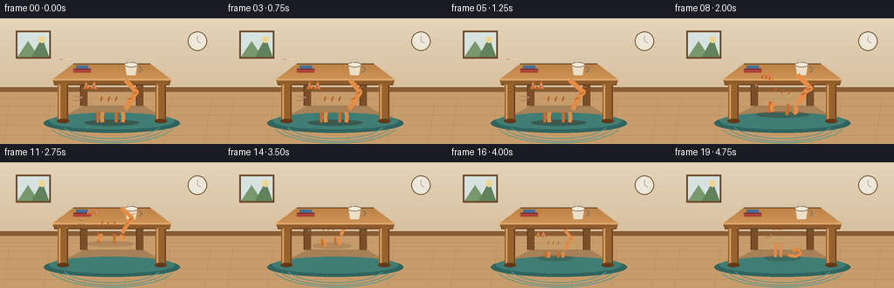
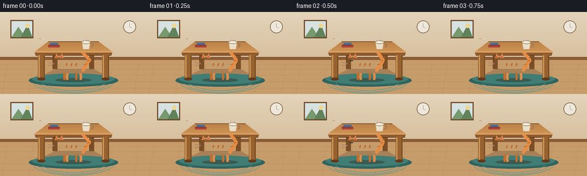

CODING AGENTS AS PIXEL WORLD MODELS
traex/Seed-2.1-Pro-0915 · dynamic_spatial_relationship_0008
点击播放 · 原生 RGB 像素
逐轮保存的候选
回放视频、检查图与代码变化。
每份候选均可单独播放。实际图片检查记录在下方工具轨迹中。
候选 01播放与检查图
点击播放 · 原生 RGB 像素


展开代码变化
--- 上一保存版本
+++ 本次保存版本
@@ -0,0 +1,406 @@
+"""Text-to-video: a cat in front of a table jumps under the table.
+
+20 RGB frames, 256x144 @ 4fps. Pure PIL/numpy procedural rendering.
+"""
+import math
+import pathlib
+
+import numpy as np
+from PIL import Image, ImageDraw
+
+import artifact_io
+
+W, H, N, FPS = 256, 144, 20, 4
+K = 3 # supersampling factor
+
+# --------------------------------------------------------------- palette
+WALL_TOP = (228, 212, 186)
+WALL_BOT = (214, 191, 158)
+BASEBOARD = (138, 92, 52)
+FLOOR = (199, 156, 107)
+FLOOR_LINE = (178, 133, 86)
+RUG = (63, 125, 117)
+RUG_EDGE = (48, 100, 94)
+WOOD_TOP_A = (189, 131, 71)
+WOOD_TOP_B = (207, 149, 84)
+WOOD_APRON = (143, 90, 43)
+WOOD_LEG = (150, 98, 47)
+WOOD_BACK = (122, 79, 40)
+WOOD_DARK = (96, 58, 26)
+FUR = (229, 140, 69)
+FUR_DARK = (199, 109, 44)
+FUR_OUT = (168, 90, 34)
+CREAM = (246, 220, 192)
+STRIPE = (184, 95, 36)
+PINK = (215, 128, 138)
+EYE = (42, 35, 32)
+SHADOW = (52, 32, 18)
+
+
+def lerp(a, b, t):
+ return a + (b - a) * t
+
+
+def smooth(t):
+ return t * t * (3 - 2 * t)
+
+
+# -------------------------------------------------- background (static)
+def make_background():
+ bg = Image.new("RGB", (W * K, H * K))
+ d = ImageDraw.Draw(bg)
+ seam = 84
+ for y in range(seam * K):
+ t = y / (seam * K)
+ c = tuple(int(lerp(WALL_TOP[i], WALL_BOT[i], t)) for i in range(3))
+ d.line([(0, y), (W * K, y)], fill=c)
+ d.rectangle([0, seam * K, W * K, H * K], fill=FLOOR)
+ for y in (92, 101, 111, 122, 134):
+ d.line([(0, y * K), (W * K, y * K)], fill=FLOOR_LINE, width=max(1, K // 2))
+ for x in range(12, W, 46):
+ d.line([(x * K, 92 * K), ((x - 8) * K, H * K)], fill=FLOOR_LINE,
+ width=max(1, K // 3))
+ d.rectangle([0, (seam - 5) * K, W * K, seam * K], fill=BASEBOARD)
+ d.line([(0, (seam - 5) * K), (W * K, (seam - 5) * K)],
+ fill=WOOD_DARK, width=K // 2)
+ # framed landscape picture
+ fx0, fy0, fx1, fy1 = (18 * K, 14 * K, 58 * K, 46 * K)
+ d.rectangle([fx0, fy0, fx1, fy1], fill=(110, 74, 42))
+ d.rectangle([fx0 + 2 * K, fy0 + 2 * K, fx1 - 2 * K, fy1 - 2 * K],
+ fill=(214, 226, 224))
+ d.polygon([(fx0 + 2 * K, fy1 - 2 * K), (fx0 + 14 * K, fy0 + 12 * K),
+ (fx0 + 26 * K, fy1 - 2 * K)], fill=(120, 152, 110))
+ d.polygon([(fx0 + 18 * K, fy1 - 2 * K), (fx0 + 30 * K, fy0 + 8 * K),
+ (fx1 - 2 * K, fy1 - 2 * K)], fill=(96, 130, 92))
+ d.ellipse([fx0 + 26 * K, fy0 + 6 * K, fx0 + 34 * K, fy0 + 14 * K],
+ fill=(238, 214, 150))
+ # wall clock
+ cx, cy, r = 226 * K, 26 * K, 11 * K
+ d.ellipse([cx - r, cy - r, cx + r, cy + r], fill=(238, 232, 218),
+ outline=(110, 74, 42), width=K)
+ d.line([(cx, cy), (cx, cy - 6 * K)], fill=(70, 50, 36), width=max(1, K // 2))
+ d.line([(cx, cy), (cx + 4 * K, cy + 2 * K)], fill=(70, 50, 36),
+ width=max(1, K // 2))
+ return bg
+
+
+class Pen:
+ """Draw on a supersampled layer using final-resolution coordinates."""
+
+ def __init__(self, img, scale):
+ self.d = ImageDraw.Draw(img)
+ self.s = scale
+
+ def _b(self, box):
+ return [v * self.s for v in box]
+
+ def _p(self, pts):
+ return [(x * self.s, y * self.s) for x, y in pts]
+
+ def ellipse(self, box, fill, outline=None, width=1):
+ self.d.ellipse(self._b(box), fill=fill, outline=outline,
+ width=max(1, int(width * self.s)))
+
+ def rect(self, box, fill, outline=None, width=1):
+ self.d.rectangle(self._b(box), fill=fill, outline=outline,
+ width=max(1, int(width * self.s)))
+
+ def polygon(self, pts, fill, outline=None):
+ self.d.polygon(self._p(pts), fill=fill, outline=outline)
+
+ def line(self, pts, fill, width=1):
+ self.d.line(self._p(pts), fill=fill, width=max(1, int(width * self.s)),
+ joint="curve")
+
+ def arc(self, box, start, end, fill, width=1):
+ self.d.arc(self._b(box), start, end, fill=fill,
+ width=max(1, int(width * self.s)))
+
+
+# ----------------------------------------------------------------- table
+TOP_BACK_Y, TOP_FRONT_Y = 52, 70
+TOP_BACK_X0, TOP_BACK_X1 = 84, 172
+TOP_FRONT_X0, TOP_FRONT_X1 = 60, 196
+APRON_Y = 76
+
+
+def draw_back_legs(layer):
+ p = Pen(layer, K)
+ for x0, x1 in ((92, 100), (156, 164)):
+ p.rect([x0, 56, x1, 100], fill=WOOD_BACK)
+ p.line([(x0, 56), (x0, 100)], fill=WOOD_DARK, width=1)
+
+
+def draw_table_top(layer):
+ p = Pen(layer, K)
+ strips = 10
+ for i in range(strips):
+ t0, t1 = i / strips, (i + 1) / strips
+ y0 = lerp(TOP_BACK_Y, TOP_FRONT_Y, t0)
+ y1 = lerp(TOP_BACK_Y, TOP_FRONT_Y, t1)
+ xb0 = lerp(TOP_BACK_X0, TOP_FRONT_X0, t0)
+ xb1 = lerp(TOP_BACK_X1, TOP_FRONT_X1, t0)
+ xa0 = lerp(TOP_BACK_X0, TOP_FRONT_X0, t1)
+ xa1 = lerp(TOP_BACK_X1, TOP_FRONT_X1, t1)
+ c = tuple(int(lerp(WOOD_TOP_A[i], WOOD_TOP_B[i], t0)) for i in range(3))
+ p.polygon([(xb0, y0), (xb1, y0), (xa1, y1), (xa0, y1)], fill=c)
+ p.line([(TOP_BACK_X0, TOP_BACK_Y), (TOP_BACK_X1, TOP_BACK_Y)],
+ fill=WOOD_DARK, width=1)
+ # books
+ p.rect([84, 58, 104, 62], fill=(172, 66, 60))
+ p.rect([87, 54, 101, 58], fill=(70, 110, 150))
+ p.line([(84, 58), (104, 58)], fill=(120, 44, 40), width=1)
+ # mug
+ p.polygon([(143, 53), (157, 53), (155, 65), (145, 65)], fill=(234, 223, 201))
+ p.ellipse([142, 50, 158, 56], fill=(244, 236, 220),
+ outline=(150, 120, 90), width=1)
+ p.arc([155, 55, 163, 62], -90, 90, fill=(150, 120, 90), width=2)
+ p.line([(148, 46), (146, 49), (149, 51)], fill=(200, 190, 175), width=1)
+ p.line([(153, 45), (152, 48), (154, 50)], fill=(200, 190, 175), width=1)
+ # apron (front face)
+ p.polygon([(TOP_FRONT_X0, TOP_FRONT_Y), (TOP_FRONT_X1, TOP_FRONT_Y),
+ (TOP_FRONT_X1 - 2, APRON_Y), (TOP_FRONT_X0 + 2, APRON_Y)],
+ fill=WOOD_APRON)
+ p.line([(TOP_FRONT_X0, TOP_FRONT_Y), (TOP_FRONT_X1, TOP_FRONT_Y)],
+ fill=(222, 168, 108), width=2)
+ p.line([(TOP_FRONT_X0 + 2, APRON_Y), (TOP_FRONT_X1 - 2, APRON_Y)],
+ fill=WOOD_DARK, width=1)
+ # front legs
+ for x0, x1 in ((66, 78), (178, 190)):
+ p.rect([x0, APRON_Y - 2, x1, 118], fill=WOOD_LEG)
+ p.line([(x0 + 2, APRON_Y), (x0 + 2, 117)], fill=(214, 154, 92), width=2)
+ p.line([(x1 - 1, APRON_Y), (x1 - 1, 117)], fill=WOOD_DARK, width=1)
+ p.ellipse([x0 - 1, 115, x1 + 1, 120], fill=WOOD_DARK)
+
+
+def draw_floor_props(layer):
+ p = Pen(layer, K)
+ shade = Image.new("RGBA", (W * K, H * K), (0, 0, 0, 0))
+ sp = Pen(shade, K)
+ sp.polygon([(96, 100), (164, 100), (192, 116), (64, 116)],
+ fill=(*SHADOW, 55))
+ layer.alpha_composite(shade)
+ p.ellipse([50, 109, 206, 131], fill=RUG_EDGE)
+ p.ellipse([56, 108, 200, 127], fill=RUG)
+ for rx in (58, 66, 74):
+ p.arc([128 - rx, 119 - rx // 3, 128 + rx, 119 + rx // 3],
+ 20, 160, fill=(90, 150, 141), width=1)
+
+
+# ------------------------------------------------------------------- cat
+# Side-profile cat facing left. Logical layer 120x86, ground origin at
+# (60, 70); coordinates passed to the drawing helpers are origin-relative.
+ORIGIN_X, ORIGIN_Y = 60, 70
+
+
+def _draw_head(p, P, hx, hy, blink):
+ r = 10.5
+ p.polygon([P(hx - 7, hy - 6), P(hx - 4, hy - 15), P(hx - 1, hy - 7)],
+ fill=FUR, outline=FUR_OUT)
+ p.polygon([P(hx + 1, hy - 7), P(hx + 5, hy - 15), P(hx + 8, hy - 6)],
+ fill=FUR, outline=FUR_OUT)
+ p.polygon([P(hx - 5, hy - 8), P(hx - 4, hy - 12), P(hx - 3, hy - 8)],
+ fill=PINK)
+ p.polygon([P(hx + 3, hy - 8), P(hx + 5, hy - 12), P(hx + 6, hy - 8)],
+ fill=PINK)
+ p.ellipse([hx - r, hy - r, hx + r, hy + r], fill=FUR,
+ outline=FUR_OUT, width=1.4)
+ for sx in (-4, 0, 4):
+ p.line([P(hx + sx, hy - r + 1), P(hx + sx, hy - r + 5)],
+ fill=STRIPE, width=1.3)
+ p.ellipse([hx - 11, hy + 1, hx - 3, hy + 7], fill=CREAM)
+ p.polygon([P(hx - 11, hy + 2), P(hx - 8, hy + 2), P(hx - 9.5, hy + 4.2)],
+ fill=PINK)
+ p.arc([hx - 11, hy + 3, hx - 6, hy + 8], 10, 90, fill=FUR_OUT, width=0.8)
+ if blink:
+ p.line([P(hx - 4, hy - 2), P(hx + 1, hy - 2)], fill=EYE, width=1.4)
+ else:
+ p.ellipse([hx - 5, hy - 4.5, hx - 1, hy - 0.5], fill=EYE)
+ p.ellipse([hx - 4, hy - 4, hx - 3, hy - 3], fill=(240, 240, 235))
+ for dy, ey in ((3, 1), (6, 7)):
+ p.line([P(hx - 9, hy + dy), P(hx - 18, hy + ey)],
+ fill=(120, 90, 70), width=0.7)
+
+
+def _leg(p, P, hip, knee, paw, far=False):
+ col = FUR_DARK if far else FUR
+ width = 3.6 if far else 4.4
+ p.line([P(*hip), P(*knee)], fill=col, width=width)
+ p.line([P(*knee), P(*paw)], fill=col, width=width)
+ p.ellipse([paw[0] - 3.2, paw[1] - 2.2, paw[0] + 3.2, paw[1] + 1.4],
+ fill=FUR_DARK if far else CREAM, width=0.8)
+
+
+def _draw_sit(p, P, blink):
+ p.line([P(10, -5), P(22, -3), P(30, -8), P(25, -15), P(17, -13)],
+ fill=FUR, width=5.5)
+ p.line([P(20, -5), P(27, -9), P(24, -12)], fill=STRIPE, width=1.4)
+ p.ellipse([-10, -19, 17, -2], fill=FUR, outline=FUR_OUT, width=1.4)
+ p.ellipse([-18, -33, 8, -9], fill=FUR, outline=FUR_OUT, width=1.4)
+ p.ellipse([-14, -29, 2, -11], fill=CREAM)
+ p.ellipse([-17, -6, -1, 0], fill=FUR_DARK, outline=FUR_OUT, width=1)
+ p.line([P(-11, -24), P(-11, -2)], fill=FUR, width=4.4)
+ p.line([P(-2, -24), P(-2, -2)], fill=FUR, width=4.4)
+ p.ellipse([-14, -4, -8, 0], fill=CREAM, width=0.8)
+ p.ellipse([-5, -4, 1, 0], fill=CREAM, width=0.8)
+ _draw_head(p, P, -9, -41, blink)
+
+
+def cat_layer(scale, pose, leg_tuck=0.0, crouch=0.0, tail_ang=0.0,
+ blink=False, tilt=0.0, squash=0.0):
+ u = K * scale
+ layer = Image.new("RGBA", (round(120 * u), round(86 * u)), (0, 0, 0, 0))
+ p = Pen(layer, u)
+
+ def P(x, y):
+ return (ORIGIN_X + x, ORIGIN_Y + y)
+
+ if pose == "sit":
+ _draw_sit(p, P, blink)
+ if tilt:
+ layer = layer.rotate(tilt, resample=Image.BICUBIC,
+ center=(ORIGIN_X * u, ORIGIN_Y * u))
+ return layer
+
+ cy = lerp(0, 5, crouch) + squash
+ # tail
+ ta = math.radians(tail_ang)
+ tip = (15 + 18 * math.sin(ta), -41 - 6 * math.cos(ta))
+ mid = (24 + 8 * math.sin(ta), -24 - 6 * math.cos(ta))
+ p.line([P(15, -15 + cy), P(*mid), P(27, -34 + cy), P(*tip)],
+ fill=FUR, width=5.5)
+ for tx, ty in ((20, -26), (25, -32), (28, -38)):
+ p.line([P(tx - 2, ty + cy), P(tx + 2, ty - 2 + cy)],
+ fill=STRIPE, width=1.4)
+ # far legs
+ _leg(p, P, (-15, -13 + cy), (-15, -6), (-15, -1), far=True)
+ _leg(p, P, (5, -13 + cy), (5, -6), (5, -1), far=True)
+ # torso
+ th = lerp(20, 15, crouch)
+ p.ellipse([-22, -6 - th + cy, 16, -6 + cy], fill=FUR,
+ outline=FUR_OUT, width=1.4)
+ # near legs, folding up during the leap
+ t = leg_tuck
+ fk = (lerp(-11, -17, t), lerp(-6, -9, t))
+ fp = (lerp(-10, -12, t), lerp(-1, -5, t))
+ bk = (lerp(13, 19, t), lerp(-6, -9, t))
+ bp = (lerp(12, 13, t), lerp(-1, -6, t))
+ _leg(p, P, (-10, -12 + cy), fk, fp)
+ _leg(p, P, (12, -12 + cy), bk, bp)
+ for sx in (-12, -4, 4):
+ p.line([P(sx, -6 - th + cy + 2), P(sx + 1.5, -6 - th + cy - 3)],
+ fill=STRIPE, width=1.6)
+ hx = lerp(-24, -27, crouch)
+ hy = lerp(-31, -27, crouch) + cy
+ _draw_head(p, P, hx, hy, blink)
+
+ if tilt:
+ layer = layer.rotate(tilt, resample=Image.BICUBIC,
+ center=(ORIGIN_X * u, ORIGIN_Y * u))
+ return layer
+
+
+# --------------------------------------------------------------- compose
+def main():
+ case_dir = pathlib.Path(__file__).parent
+ bg = make_background()
+
+ floor_layer = Image.new("RGBA", (W * K, H * K), (0, 0, 0, 0))
+ draw_floor_props(floor_layer)
+
+ back_legs = Image.new("RGBA", (W * K, H * K), (0, 0, 0, 0))
+ draw_back_legs(back_legs)
+
+ top_layer = Image.new("RGBA", (W * K, H * K), (0, 0, 0, 0))
+ draw_table_top(top_layer)
+
+ frames = []
+ CX = 128
+ for f in range(N):
+ canvas = bg.copy().convert("RGBA")
+ canvas.alpha_composite(floor_layer)
+ canvas.alpha_composite(back_legs)
+
+ if f <= 6:
+ # idle in front of the table, tail swaying
+ base, scale = 120.0, 1.05
+ pose, tuck, crouch = "stand", 0.0, 0.0
+ tail_ang, tilt, squash = 10 * math.sin(f / 7 * 2 * math.pi), 0, 0
+ shadow_a = 95
+ under = False
+ elif f == 7:
+ # crouch / wind-up
+ base, scale = 120.0, 1.05
+ pose, tuck, crouch = "stand", 0.1, 1.0
+ tail_ang, tilt, squash = -18, 0, 0
+ shadow_a = 105
+ under = False
+ elif f <= 16:
+ # leap up and over the front edge, dropping beneath the top
+ q = (f - 7) / 9.0
+ e = smooth(q)
+ lift = 88 * q * (1 - q) # peak just over the apron
+ base = 120 - 10 * e - lift
+ scale = lerp(1.05, 0.70, e)
+ pose, crouch = "stand", 0.0
+ tuck = 0.95 * math.sin(math.pi * min(1.0, q * 1.4))
+ tail_ang = lerp(-18, 6, q)
+ tilt = lerp(-9, 8, e)
+ squash = 1.5 if f == 16 else 0.0
+ if f == 16:
+ tuck, tilt, tail_ang = 0, 0, 0
+ under = q >= 0.66
+ shadow_a = int(lerp(95, 55, e) * (1.0 - 0.5 * math.sin(math.pi * q)))
+ else:
+ # landed under the table, settling
+ base, scale = 110.0, 0.70
+ under = True
+ shadow_a = 55
+ tail_ang, tilt, squash = 0, 0, 0
+ if f == 17:
+ pose, tuck, crouch = "stand", 0, 0
+ else:
+ pose, tuck, crouch = "sit", 0, 0
+
+ blink = f in (2, 14)
+ # During the leap the cat first rises in front of the front edge,
+ # crosses behind it on the way down, and lands under the top.
+ cx = CX
+ if 8 <= f <= 16:
+ qx = (f - 7) / 9.0
+ cx = CX - 4 * smooth(qx)
+
+ shadow = Image.new("RGBA", (W * K, H * K), (0, 0, 0, 0))
+ sp = Pen(shadow, K)
+ sw = 30 * scale
+ sp.ellipse([cx - sw, base - 4, cx + sw, base + 3],
+ fill=(*SHADOW, shadow_a))
+ canvas.alpha_composite(shadow)
+
+ cat = cat_layer(scale, pose, leg_tuck=tuck, crouch=crouch,
+ tail_ang=tail_ang, blink=blink, tilt=tilt,
+ squash=squash)
+ if f == 17:
+ sit = cat_layer(scale, "sit", blink=blink)
+ sit.putalpha(sit.getchannel("A").point(lambda v: int(v * 0.45)))
+ cat.alpha_composite(sit)
+ pos = (round((cx - ORIGIN_X * scale) * K),
+ round((base - ORIGIN_Y * scale) * K))
+
+ if under:
+ canvas.alpha_composite(cat, pos)
+ canvas.alpha_composite(top_layer)
+ else:
+ canvas.alpha_composite(top_layer)
+ canvas.alpha_composite(cat, pos)
+
+ out = canvas.convert("RGB").resize((W, H), Image.LANCZOS)
+ frames.append(np.asarray(out, dtype=np.uint8))
+
+ frames = np.stack(frames)
+ artifact_io.save(frames, case_dir)
+ print("saved", frames.shape)
+
+
+if __name__ == "__main__":
+ main()
可观测工具轨迹
实际执行的命令与返回图片。
命令 1exit 0
/bin/bash -lc 'cat prompt.txt; echo "---RULES---"; cat GENERATION_RULES.md; echo "---SPEC---"; cat task_spec.json'
命令 2exit 0
/bin/bash -lc 'cat artifact_io.py'
命令 3exit 0
/bin/bash -lc "grep -n \"under = q\\|blink = f\\|pos = \\|sp.ellipse\" generate.py"
命令 4exit 0
/bin/bash -lc 'cd . && python generate.py && ls frames | head'
视觉工具实际返回图片 1

保存候选 1 份；完成命令 4 次；可验证图片返回 1 张。原始 API 响应与完整日志保留在本地。